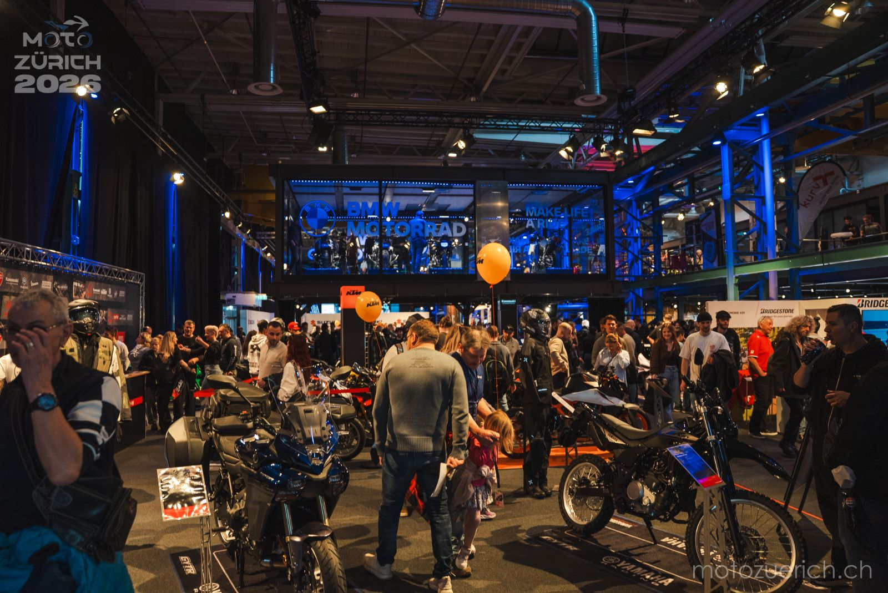
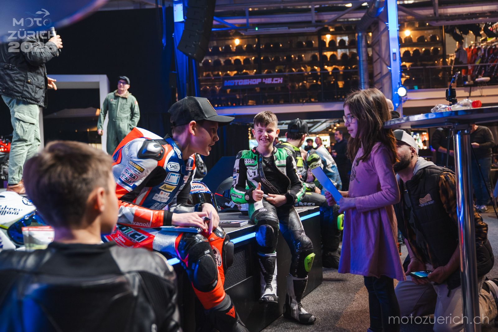
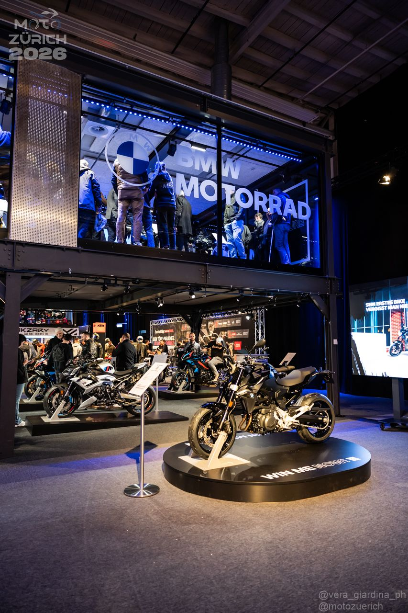
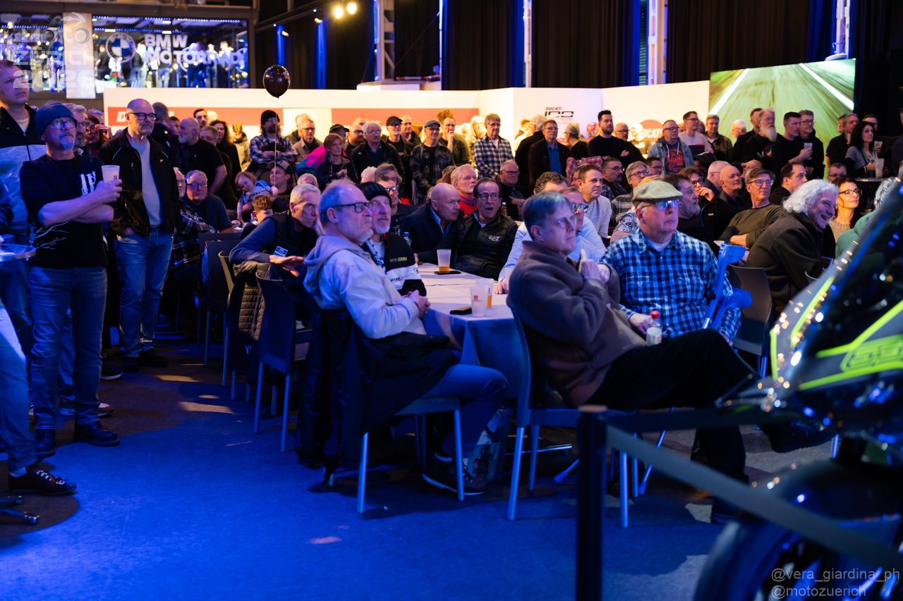
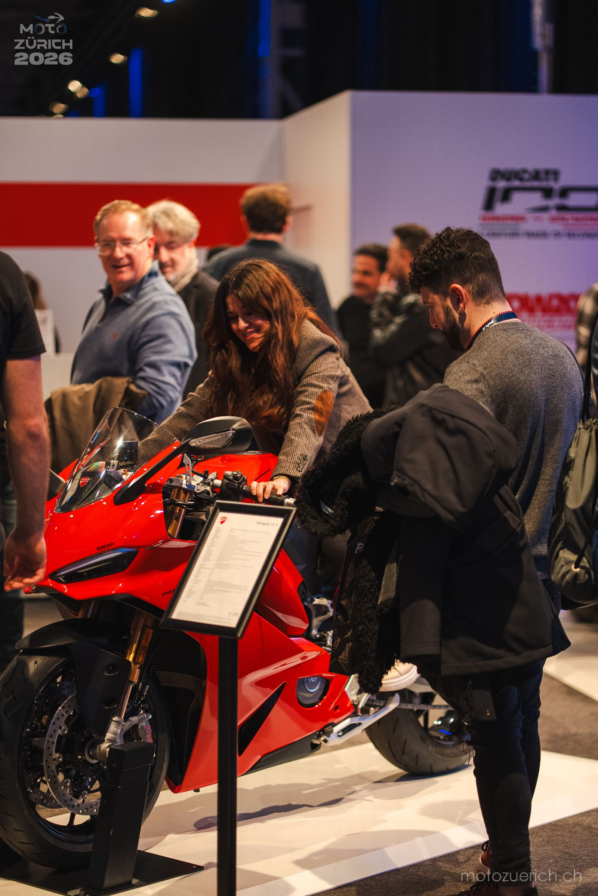
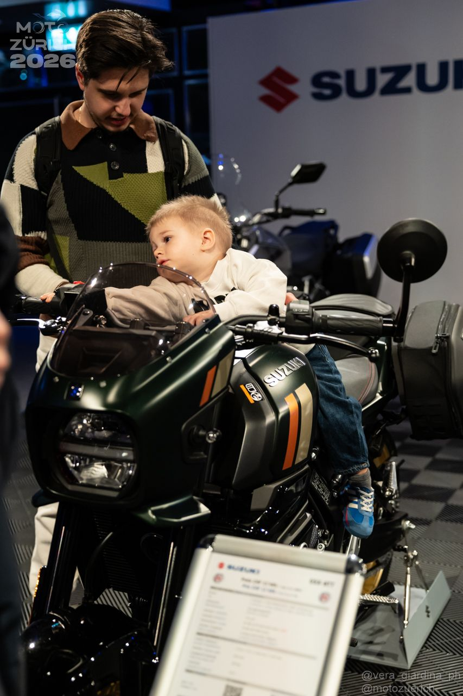

Die MOTO-ZÜRICH ist der unabhängige Saisonauftakt der Schweizer Motorradszene – urban, kuratiert und nahbar. Kein Jahrmarkt, kein Massenspektakel, sondern ein echter Treffpunkt für alle, die Motorräder leben.
Händler, Hersteller, Marken, Zubehör, Custom-Bikes und Live-Shows unter einem Dach – ergänzt durch die Saisonstart-Party am Abend. In Zürich-Oerlikon, direkt im Herzen der Stadt.
Nach der Premiere 2026 mit über 7'000 Besuchern entwickeln wir das Event konsequent weiter: 2027 wird grösser, vielfältiger und erlebnisreicher.
Der unabhängige Saisonauftakt der Schweizer Motorradszene – ein urbanes, kuratiertes Drei-Tage-Event in Zürich-Oerlikon. Statt Messe-Gigantismus setzen wir auf Qualität, Nähe und Erlebnis: kompakt statt überdimensioniert, persönlich statt anonym.
Echte Neuheiten und Highlights der kommenden Saison – ausgewählt und klar inszeniert. Auf 5'740 m² präsentieren Marken, Händler und Importeure ihre Saison-Essenz.
Das Herzstück für Talks, Interviews und Stories. Kurze Formate, keine endlosen Monologe – Racing-Einblicke, Reise-Geschichten und Premieren.
Über 4'000 m² Erlebnisfläche für Action, Show und Motorsport. Hier trifft Adrenalin auf Community – Motorsport zum Anfassen, hautnah und mitten im Geschehen.
Wenn der Tag endet, geht es weiter: Fahrer:innen, Händler und Friends feiern den Saisonstart – mit DJ-Sets, Drinks und urbanem Zürich-Flair.

Mit der ersten Ausgabe ist ein neuer Treffpunkt für die Schweizer Motorradszene entstanden. Auf 10'000 m² erwartete die Besucher:innen ein vielseitiges Programm – die Premiere hat gezeigt: die Szene wünscht sich ein unabhängiges, kuratiertes Event zum Saisonstart.





Erste Eindrücke in der Berichterstattung. Die vollständige Foto- und Videodokumentation sowie der ausführliche Rückblick folgen im Juli 2026.
Die erste Durchführung war ein Erfolg – und gleichzeitig eine Lernkurve. Wir nehmen alle Hinweise, Wünsche und Verbesserungsvorschläge unserer Besucher:innen und Aussteller ernst und arbeiten sie systematisch in die Planung für MOTO-ZÜRICH 2027 ein.
Hast du eine Idee, einen Hinweis oder konstruktive Kritik? Schreib uns – jede Rückmeldung hilft, den Saisonstart noch besser zu machen.
Feedback teilen


 moto-lifestyle.ch
moto-lifestyle.ch